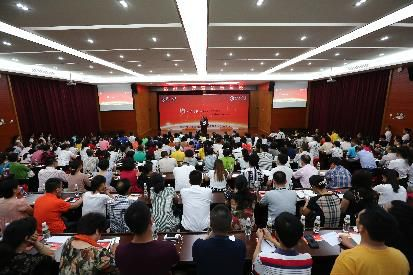
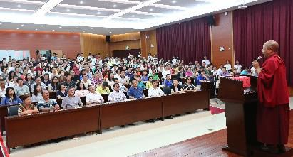
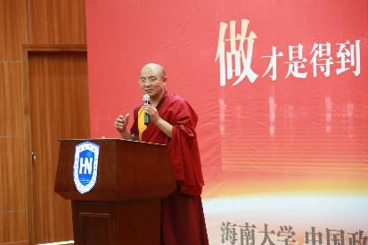

做才是得到——海南大学演讲
『2015年6月22日』
副校长致辞：
今天是一个特别的日子，在海南炎热了一段时间之后，天气变得非常凉快，像是老天专门为这次活动，提供了一个最佳气温，这也反映了天人一体、人跟自然的和谐共生。
此时我们请到了索达吉堪布，给这一次文化之旅作首场校园演讲。我代表海南大学和中国政法大学，对堪布的到来表示欢迎，也对他鞍马劳顿的辛苦表示敬意。
在跟堪布商量主题的时候，我们选了“做才是得到”。当然对这个题目，我们是从一个普通世俗人的角度来理解的，一会儿堪布将会从物质、精神、行动等各个方面作更深的诠释，我想这确实值得期待。
再一次对各位的积极参与、对索达吉堪布的到来，表示欢迎和感谢！
各位老师、同学，以及其他来宾，很高兴在这样美丽的校园，和这么多有知识、有爱心、有文化的学者，有一个共同交流、学习的机会。
刚才，副校长带我参观了海南大学，看了红树林、东坡湖、白鹭，还有各个学院的建筑，我觉得在这里学习的人确实很有福报，应该非常快乐。
听副校长说，他已经来了二十多年，刚开始，这里只有两千多个学生，而现在有四万两千多，二十年翻了二十倍。
作为老师，能坚守在这个岗位上，不断地给学生传授知识，其实是很难得的。这个职业看似平凡，但如果长期、规律地做下去，会很有意义。
我也可以算是一个普普通通的老师。虽然出家了，但在佛学院的大部分时间都是讲课，少部分时间出来跟大家交流，除此之外，生活也很平淡，没什么过多的欲望和追求。
“做”是一门学问
今天的主题是“做才是得到”。我看你们把“做”写得很大，“得到”几个字写得比较小，我想这个意思是：要“得到”，就得多“做”，否则会得不到，或者即便得到，也不一定是通过正确的途径。
有些年轻人喜欢夸夸其谈，想得很多，说得很多，但做得很少。“有其言，无其行，君子耻之。”古人也这样讲，光在嘴上说，没有实际行动，君子会为之而感到羞耻。
每个人来到人间，面前都会摆着很多机遇，有些是你的，有些不是你的。对身边出现的人和事，还有这些机遇，什么时候该争取，什么时候不能贪得无厌，就很有必要了解“做才是得到”的意义。
从未开显过的意义
其实“做才是得到”，也是我在两三年前写的一本书的书名，写完之后，没想到很畅销。这本书从表面上看，是针对世间没有研究佛学的普通人，从文化层面来讲的，读过这本书，或者将来读到这本书的人，自然会明白。
而从更深的层面来看，书里还讲到了佛法教义。这一点，在今天之前，我从来没有讲过。有些人可能知道其中有个别的佛教道理，但并不知道，这其中包含了藏传佛教完整的修行体系。
所以想趁今天的机会，稍微说一下。有兴趣的人可以自己去看，但不一定能看得出来。这本书分了八个章节，第一章做就是得到，讲人身难得；第二章怎样面对一切痛苦，讲轮回苦的本性；第三章讲万法都是无常的，瞬息万变；第四章讲因果不虚。这在道次第中，叫四种共同加行：人身难得、寿命无常、轮回痛苦、业因果。
后面第五章，讲佛的加持不可思议，谈到了皈依、积资、净障；第六章讲孝顺，大乘佛教如何孝顺父母等等，这是菩提心；最后讲到临终关怀，也就是往生法。这些属于六种不共加行，有一定佛学基础的人，就知道它们的重要性。
因为我是作者，所以带入了自己佛学方面的一些研究。一本书里，实际包含了这些直接、间接、隐藏的意义。
而它的直接意义就是，无论做什么事，都不能只是口头上说、心里面想、理论上了解，一定要在行为中去实践。

你想得到什么？
今天想跟大家分享的，就是这一点。在座的老师、学生，都可以来分析，跟过去任何一个时代相比，我们穿得越来越华丽、昂贵、有品味；吃得也不寒酸，桌上有各种美味佳肴。这些外在的物质生活，的确有所进步。但我们的内心，是否因此更快乐？我们的幸福指数，是否随着物质的提升而提升？也不一定。相反，人们想要的更多，更加不得满足。
尤其在城市里，经常听人说压力太大、时间不够，很忙、很累。人们设想了很多理念，但生活得依然不好，久而久之可能会觉得，这个时代对自己有许多的不公平。
特别是大学生活，跟社会上完全不同。曾经，你有很多激情和梦想、很多人生规划，但等你走上社会，也许会发现，很多都无法实现。
小心“成功学”
我接触过不少大学生，有很大一部分人都想着，一毕业就创业，自己当老板。但是看看现在的中国，那么多中小企业，还有那些大型集团，如果人人都当老板，不当员工，能不能形成这样的环境、国家和世界？
何况刚入社会的时候，你毕竟只是个学生，大学里的知识，也许百分之二十都用不上，人际关系很少，社会经验也不怎么丰富。你学到的东西，都是跟学习阶段匹配的，到了社会上，不一定能对接。在这个时候，很多梦想，可能会变成梦幻泡影。
所以刚毕业的时候，应该做一个普普通通、简简单单、脚踏实地的人，一件事一件事地去完成。就像饭要一口一口地吃，不可能一口撑成胖子。路要一步一步地走，不可能一步登天或者跨越世界。做任何事情，一件一件慢慢来，才能有一些成功。
现在很多所谓的成功学，会让我们的欲望更加膨胀，因为它只讲结果，不讲成功所需要的因缘。无论从佛学还是世间角度分析，成功都需要过程，这个过程也许很漫长，我们要日积月累，积攒到一定的技术、经验、智慧，因缘具足，才会水到渠成。
你们这里每个人都有水喝。我有时候在别的地方，看到只有前排领导有水喝，后面的人都没有。但这里不一样，基本每个位子上都有喝的，这算是海南大学的一个特色吧。虽然只是一瓶水，但大家都有得喝，感觉比较舒服、平等。如果只给领导喝，只给前排喝，其他人喝不上，可能不太好。所以特别感谢组织者。
想做，就拿出诚意
今天探讨的“做才是得到”，对我们的人生来讲，非常重要。不管什么人，如果想要得到，就得切实地去做。
我对自己也有一个评价：虽然不是很有智慧，也不是很能干，但只要诚心发愿要做的事，即使遇到再大的困难，也会硬着头皮做下去。并不是刚开始有一种热情，过一段时间，就慢慢消退，失去兴趣，或者推给别人：“你们去做吧，我没有时间。”不会这样。
我觉得，只要承诺过，下过决心，跟别人明确表态要做的事，有生之年就应该认真地铭记于心，要记住自己最初的发心。在我的人生中，也一直都在做，不管是翻译、讲课，或者办学校，虽然是一些不足挂齿的小事，也算善事吧，但只要是我想做的，都会努力。
镜子里是谁？
当然，就像山路不可能是笔直的，总会有一些弯弯曲曲；做任何一件事，也不可能从头到尾都顺顺利利，总会出现想得到、想不到的违缘和障碍。但这些违缘、障碍不一定真实存在，很多时候只是自己的心力不够。
我看过一个国外的故事，说某家公司给所有人发通知，让大家去殡仪馆吊唁某个人，说他曾经障碍过我们，现在已经死了。大家都去了，看到殡仪馆里有一副棺材，打开一看，里面却是空的，只有一面长长的镜子，照出每个人的脸。原来真正作障碍的，没有别人，只有自己。
这个故事很讽刺，我们习惯于将过错归结于他人，却不懂反观自己。比如你在某个单位，感觉领导对你不认可，同事对你不友好，似乎周围的人都在跟你作对，但事实也许是，你好吃懒做，不认真工作，其他人不想让你白吃白喝，自然对你没有好脸色。所以，遇到做不下去的情况，应该反观自己，也许是自己正在制造障碍。
第一种：无底线的“做”
同样是“做才是得到”，也分几种类别。
第一种类别，虽然在做，但做的不是好事。不管在学校还是社会上，对正经的学习、工作没兴趣，尽爱干坏事。
现在有一些城市，年轻人吸毒、贩毒的情况比较严重，这些毒品对人体神经产生化学作用，一旦成了毒瘾，就很难戒掉。走到这一步，会拿自己完全没办法，为了吸毒，卖血、卖家产、赌博，直至做出严重违法乱纪的行为。虽然他们也在做，但做得非常不合理，违背了良心，违背了天人合一的道。
我看过一个故事，说有人想贿赂一个官员，于是在夜深人静的时候，带着十斤黄金去见他。但官员很廉洁，不愿意接受，他说：“我不能收，这样不好。”这个人说：“没事，您收下吧，现在深更半夜的，谁也不知道。”官员却说：“你知道，我知道，天知道，地知道。”
这种说法也是对的。如果做一些不正规、不合理、不正义的事，也许暂时没人知道，但举头三尺有神明，在自己的良心上，在因果规律上，是过不去的。
希望大家都有自己的底线，宁可过平凡的生活、贫寒的生活，甚至去流浪，也不去做危害自己、危害家庭、危害社会的事。有些事，千万不能做，一旦做了，得到的将是无法承受的苦果。
“讲个性”为时过早
有些年轻人认为：“我是自由的，我有我的个性，做什么事都不用你们管。”其实，当你只是一个学生，或者处在人生刚起步的阶段，就还不是讲个性的时候。什么时候可以讲个性呢？成了成功人士，有了丰富的人生阅历，智慧也达到了一定境界，到那时，你可以讲自己的个性、兴趣和品味。而现在，刚从大学出来，基本的家庭、工作、生活都没有，讲个性可能为时过早。
尤其不要为了所谓的“个性”为所欲为，否则得到的，不一定是好的结果。一旦被关在监狱里，一旦家破人亡，一旦身败名裂，一旦身体被彻底毁坏，你会后悔莫及的。
我们对人生应该有个正确的定位。今天的时代有各种乱象，如果遇到一些不好的因缘，结交了恶友，很可能会同流合污，或者以盲导盲，慢慢被引入特别危险、可怕的深渊，给自己的家人、朋友也带来麻烦和痛苦。
我去过一些监狱，发现里面有些人非常聪明，但就是因为太聪明了，利用这些“聪明才智”去犯罪，结果把自己困在牢狱当中，失去了自由。他们也很伤心、后悔，但事到如今，已经没办法了。
所以，在年轻时代，应该先建立一种正确的思考，这非常重要。

第二种：无追求的“做”
第二种类别，是什么都不想做。有些人对家里的事、工作中的事，或者作为佛教徒对修行上的事，一概不感兴趣，过得浑浑噩噩、糊里糊涂，这样也很不好。
做人做到无聊、无用、无趣的地步，是很倒霉的。人应该有所作为，如果每天都只是混日子，在世间来讲是极其失败的。什么都不想做，也就不可能得到很多。
第三种：半途而废的“做”
第三种类别，是虽然想做，但很难做成。就像列宁说的：“思想的巨人，行动的矮子。”他们的思维很活跃，这个也想做，那个也想做，但在实际行动中，做一点点事情，都极其脆弱，总是半途而废。
我遇见过这样的人，讲得很好，头头是道，却不一定能做成。所以如果你是领导，选拔人才的时候，不能光看口才。我有时候也要选一些工作人员，看到口才不错的，我就会想，他嘴巴特别会说，听起来也很有思路、很有理想，但他说的这些，到底能不能落到实处，感觉好像很困难。这类人，让他想，让他写，都没有问题，一旦让他做，也许因为不够坚定和努力，很容易懈怠、退失，做着做着，事情就夭折了，会有这样的情况。
第四种：口头上的“做”
第四种类别，是嘴上说做，其实不会做，只是说说而已。
日本有个作家，写了本书叫《行动改革》，分析了只说不做的九种人。比如，有人之所以不做，是因为喜欢找借口：没钱、没时间、领导不支持、考虑不周到、条件不具足，或者自己年龄不行、智慧不行、经验不行、处境不行……所以暂时先放着，不做。
原本承诺过的事，却一直没有落到实处，这也是很不好的。佛教著名的龙猛论师曾经说过，智者的承诺，应该像石头上刻字一样，无论经过多少岁月，经历怎样的风吹雨打，也不会被抹掉、失效，当初的承诺，永远都在。
这一点，希望大家也能记住。不管是修行，还是做任何事，所有的承诺，都应当努力让它实现。这将成为一种智慧的传统，甚至可能生生世世地延续下去。
两百多年的承诺
有个令我感到惊奇的故事，也跟大家分享一下。
美国纽约的哈德逊河边，有一个两百多年前孩子的坟墓。孩子名叫波洛克，年仅5岁就不幸落水身亡，死后，父母给他建了一个小小的坟墓，当时是1797年7月15日。
父母的悲伤一直无法平息，后来，他们把这片土地转让给了别人，搬去很远的地方。卖地的时候，他们跟新主人达成了一个协议：将孩子的坟墓作为土地的一部分永久保留，无论发生什么事，都不要毁坏它。
时间过去一百年，这片土地的主人换了一个又一个，但孩子的坟墓依然被完整地保留下来。直到1897年，这里被选为美国第十八届总统格兰特将军的墓地，而孩子的坟墓也在相距不到100米的地方，比邻而居。
又一个百年过去，格兰特陵园建成一百周年的时候，孩子也已经去世两百年了，纽约市市长来到这里，又重新修整了孩子的坟墓，并在总统的纪念大会上，亲自讲述了这个故事。
我曾经看过照片，孩子的坟墓很小，在一个铁围栏里，格兰特将军的坟墓比较大，就在不远的地方。去年我在纽约，有点好奇，很想去那里看看，因为这是一个延续了几百年的承诺。一个普通孩子的小小的坟墓，在这么长的时间里，即使随着这块土地被卖来卖去，即使被选作总统的墓地，它还是在那里，完好留存。如果换成其他国家，很可能过了十年八年，买主一变，就被拆掉、迁走了，更难以想象，还能跟国家总统的陵园建在一起。
从这点来看，美国还是很不错的，为一份这样的承诺，坚持了两百多年。这很令人深思，承诺并不仅仅是一句话，承诺了，就一定要做到。
衡量人的标准
古人也常说，有智慧的人，来到这个世界时做出的承诺，到他离开这个世界的时候，也依然存在；没有智慧的人，承诺就像水上的花纹，说完之后，自己也忘了，别人也忘了。
在世间，人们衡量一个人，也会看他当初的承诺能不能在日后的行动中做到，这是一个重要的评判标准。
如果做不到，只是口头上、理论上说得非常美妙，就成了“知道分子”，不是知识分子，他们知道很多，但在实际行动中是不会去做的。
切莫嘴上行船
有这样一个故事：一个专门在海上行船的船长，其实自己没有开过船，但是特别会说，把开船的理论，包括遇到漩涡、急流等等的阻碍怎么办，都讲得非常好。后来，真正开船的人病死了，大家让这个特别会说的人开船，但他只会说，不会做，结果和船一起葬身大海。
佛教的修行也是如此，光停留在口头上，肯定是不行的。理论跟实修，有非常大的差别。
可能你们对这些不太了解。佛教群体中就有一部分这样的人，喜欢讲禅宗、密宗里的最高境界，说得自己好像已经开悟了，但其实连基本的善事也不去做。
大禅师的小道理
唐代诗人白居易曾经亲近鸟窠道林禅师。白居易是个很有思想的文学家，他问禅师什么是佛法，禅师跟他说：“诸恶莫作，诸善奉行。”白居易很失望，觉得这么鼎鼎有名的法师，怎么讲出一个连三岁小孩都懂的道理，多么有失水准，不觉得惭愧吗？他看不上这个回答，言语中有种嘲讽。
鸟窠禅师回答说，是的，这个道理讲出来，可能三岁孩子都懂，但如果真正去实践，恐怕八十岁的老翁也做不到。
修行就是这样，有些人会讲很多大道理，但这些道理跟自己的心是分开的，无法相应。
敢梦敢当
在这个世界上，我们需要不断地积累、沉淀，尤其在年轻的时候。好像我这几年遇到的很多年轻人，个个都满腔热忱，想做大、做强，“我要赚大钱”“我要改变世界”“我要造福人类”……他们的心态、视野确实和过去的人不一样。
有这样远大的理想也是好的，不像有些年轻人，心里没什么想法，整天无所作为，还经常拖累父母。但也要看到，很多事情，并不是喊个口号，就什么因缘都来了。
有时候，我也会关注世间的有钱人，倒不是想跟他们学赚钱，而是因为这个时代，人们特别喜欢用金钱来衡量成功，所以我想看看，他们是怎样成功的，甚至能在短短的二十年当中，就当上世界首富。
然后你会发现，其实每个成功的背后，都有很多艰辛。比如大家熟悉的阿里巴巴、腾讯、万达。我曾经看到万达老总的创业经历，刚开始怎么借钱、怎么找地，还跟人打了两百多场官司，看他经历的这些事，就觉得成功人士的内心还是很坚强的。
我们往往只看到他们成功后的样子：有花不完的钱，不仅这辈子花不完，下辈子、再下辈子，如果还有支配权的话，也都花不完。看到这些，很多年轻人会羡慕，希望能变得跟他们一样，但实际上，在他们成功之前，也只是一个普通的员工；也曾经在某个岗位，认真勤恳地学习技术；也曾经在每一个难关面前，坚强地度过。在这个过程中，很多人坚持不下去，就放弃了；而那些不断坚持的人，就成了今天的成功人士。

成功人士的“秘密”
当然这种成功，作为一个佛学研究者，我会毫无疑问地认为，不可能仅仅依靠知识、技能或努力就能实现，也跟他曾经造过的善业有关，这是一些看不见、摸不着的特殊因缘。
我们经常看到，两个人一起创业，想合伙开发某个项目——现在一讲“开发”，就是分成、发财的意思。这两个合伙人，起初可能旗鼓相当，但到了后来，也会有不同的发展。
所以成功自有因缘。你的职业规划可以有很多种选择，不一定非要创业、当老板。那些世间非常成功的人，有些也不是老板，但他在一些大企业、大集团里，积累了丰厚的实力、财富和人脉。如果一开始选择创业，不一定能有今天，但因为选对了团队、找对了老板，今天的生活、事业，已经跟其他人完全不同。
佛教讲，凡事都由因缘决定，这些因缘有善有恶，对于那些善的因缘，我们应该去做，去争取。
舞台很大，你的心呢？
当然，同样是“做”，每个人得到的果又有不同。大部分人是为了自己和家庭的利益在做，为了个人的发展、孩子的成长；稍微扩大一点，也只是考虑自己的兄弟姐妹、整个家族的子孙后代。有没有更广阔的心量呢？很多人是没有的。而真正有智慧、有能力的人，就不会只追求自己的快乐，他会考虑更广大的人群，甚至为了所有众生而奋斗。这是最成功的“做”，也是最成功的“得到”。
如果你是老师，能够坚持天天讲课，让很多人沐浴在智慧的海洋中，当你桃李满天下的时候，就已经“做才是得到”。
如果你是企业家，能够一心一意、尽职尽责地帮助员工和客户，当所有人都把赞美的语言写在天空中，写在草原上，写在心间的时候，你也会感到一种成功。
如果你是公务员或者领导，能够用公平正直、合理合法的行为，帮助百姓获得法律的保护、正义的维护，当你为此而奋斗，活在这个人间，就会非常有意义。
别忘记，古老的智慧
尤其在追求成功的过程中，大家不要忘记我们的传统文化。
广东外语外贸大学曾经举办过一次讲座，主题是“困境时代的作家”，请到2008年的诺贝尔文学奖得主克莱齐奥，一个73岁的老人，来做演讲。
克莱齐奥说，每个人都在争取成功，但真正的成功学，在中国的老子等一些大思想家的学说里。他们的思想，是成功人生的典范。
这是一个诺贝尔奖得主的眼光。而现在的很多人，只关注当今时代的成功人士。比如现场就有人问他，是否知道莫言、韩寒、郭敬明，有没有看过他们写的书。他说暂时还不了解，将来会去看。但他特别指出，喜欢老舍和鲁迅。我想他以后也不一定会看，但由此可以了解到他的想法，是觉得成功学的根本就在儒教思想这些传统文化当中。
我们都想做一个好人，觉得这是做人的成功，但对这个“好”字，随着各自的因缘，会有不同的定义：也许是对家人好；也许是对客户、员工好；也许是对人类，以及人类之外无量无边的众生都好。这取决于每个人的发心，而这种发心，不能忘失、背离传统文化的道。
大乘佛法的未来价值
有一本名叫《展望21世纪》的书，可能大家都看过，是关于上个世纪70年代，汤恩比博士和池田大作的一次很有意义的对话。他们主要探讨了生命的源泉，话题涉及环境保护、政治体制、国民经济、医疗卫生等方方面面，还谈到了中国对未来世界的作用。
他们一个是基督教徒，一个是佛教徒；既是虔诚的宗教徒，也是拥有牛津等名校背景的著名学者。谈话中，他们把科学思想和宗教理念进行对比、分析，对未来进行了预测和展望，由此讲到：“要解决人类21世纪的社会问题，只有依靠孔孟学说和大乘佛法。”这句话，也值得年轻一代认真思维。
这是一个科学家，和一个对当今社会颇具洞察的心灵导师对世界的看法。无论在21世纪，还是未来的22世纪，孔孟思想对于解决人类的社会问题都非常重要，对于完善人格，指导自己做一个好人，也同样重要。但仅仅学习儒教是不够的，还要学习大乘佛法；不能只想着完善自身，发展个人主义、利己主义的思想，还应该培养利他的精神。尤其在这个全球化的时代，人们不能太自私了，如果大家都有一种大乘佛教的利他心、菩提心，才能把这个世界营造成真正美好的家园。
今天最重要
所以，希望大家除了研究各自的专业：各种科技知识、文化知识，有空的时候，也要关注自己的内心世界，这更重要。如果内心不快乐，即使拥有再高的学问、再多的财富，生活也会过得差强人意，甚至会陷在抑郁症、自闭症等等的麻烦当中。尤其在这个异常复杂、忙碌的时代，给自己留出时间，反观内心、找到宁静，是非常必要的。
最后，我想用一个小小的禅宗公案，作为今天讲座的结尾。
有一个人问一位了不起的禅师：“生命中的哪一天最重要？”禅师说：“今天。”这个人问：“是不是今天发生了特别惊天动地的事？”禅师说：“那倒没有。”这个人继续问：“是不是因为我的来访，所以很重要？”禅师说：“当然也不是。”这个人不解地说：“那到底是为什么呢？”禅师回答：“因为过去就像沉在海底的船，已经过去了，没什么重要的；未来就算有再多的辉煌和精彩，也还没有发生，同样不重要；而我们当下的生活，正在发生的一切，对每个人来讲才是最重要的。”
就像汉字的“念”，上面是“今”，下面是“心”，指的就是今天当下的这颗心。如果我们念念是善，在善的方面去发愿、去行动，最后也一定会成就一个善的梦想。
对应大乘佛教，就是愿菩提心和行菩提心：愿是想，行是做；做，才是得到。